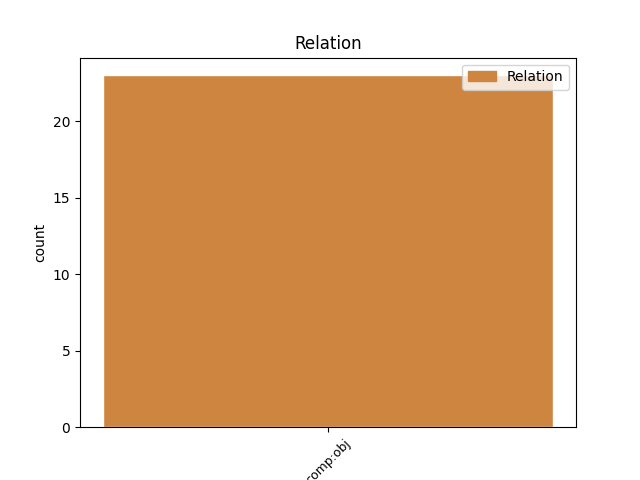
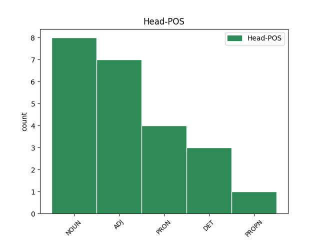
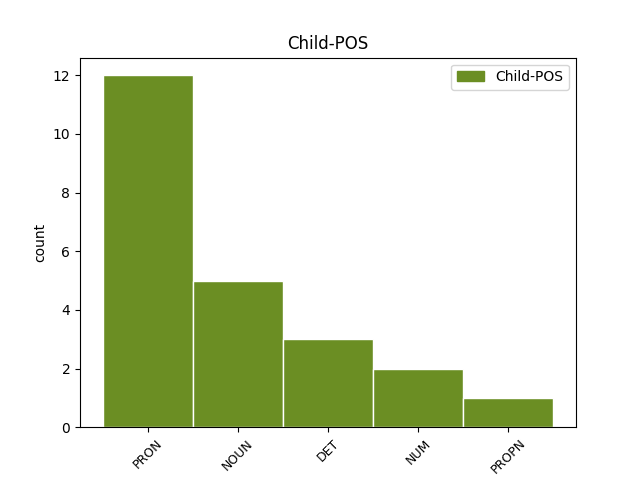

Distribution of features within this leaf



Agreement Rules sorted by frequency.
- When the dependent token is the direct object complements(comp:obj) of the head token, and the head token is PRON and the dependent token is PRON.
1 kaj kaj PRON Pq-nsn Case=Nom|Gender=Neut|Number=Sing|PronType=Int 2 comp:obj _ msd=Zv-sei|word=ka
2 ti ti PRON Pp2-sn Case=Nom|Number=Sing|Person=2|PronType=Prs 0 _ _ _
3 ? _ _ _ _ 0 _ _ _
1 to ta DET Pd-nsn Case=Nom|Gender=Neut|Number=Sing|PronType=Dem 3 comp:obj _ msd=Zk-sei|word=to
2 tudi _ _ _ _ 0 _ _ _
3 jaz jaz PRON Pp1-sn Case=Nom|Number=Sing|Person=1|PronType=Prs 0 _ _ _
4 nič _ _ _ _ 0 _ _ _
5 pametnega _ _ _ _ 0 _ _ _
6 [gap] _ _ _ _ 0 _ _ _
1 tako _ _ _ _ 0 _ _ _
2 pet _ _ _ _ 0 _ _ _
3 iks _ _ _ _ 0 _ _ _
4 minus _ _ _ _ 0 _ _ _
5 tri _ _ _ _ 0 _ _ _
6 je _ _ _ _ 0 _ _ _
7 enako enak DET Pi-nsn Case=Nom|Gender=Neut|Number=Sing|PronType=Ind 0 _ _ _
8 ena en NUM Mlpfsn Case=Nom|Gender=Fem|Number=Sing|NumForm=Word|NumType=Card 7 comp:obj _ msd=Kbzzei|word=ena
Disagree Examples:
1 pa _ _ _ _ 0 _ _ _
2 je _ _ _ _ 0 _ _ _
3 števanovce Števanovci PROPN Npmpa Case=Acc|Gender=Masc|Number=Plur 9 comp:obj _ msd=Slmmt|word=Števanofce
4 v _ _ _ _ 0 _ _ _
5 krčmi _ _ _ _ 0 _ _ _
6 mojemu _ _ _ _ 0 _ _ _
7 očetu _ _ _ _ 0 _ _ _
8 tja _ _ _ _ 0 _ _ _
9 pravil pravilo NOUN Ncnpg Case=Gen|Gender=Neut|Number=Plur 0 _ _ _
10 ka _ _ _ _ 0 _ _ _
11 v _ _ _ _ 0 _ _ _
12 kakšno _ _ _ _ 0 _ _ _
13 navoljo _ _ _ _ 0 _ _ _
14 je _ _ _ _ 0 _ _ _
15 pa _ _ _ _ 0 _ _ _
16 ga _ _ _ _ 0 _ _ _
17 je _ _ _ _ 0 _ _ _
18 moj _ _ _ _ 0 _ _ _
19 oče _ _ _ _ 0 _ _ _
20 skril _ _ _ _ 0 _ _ _
1 čakaj _ _ _ _ 0 _ _ _
2 tebi ti PRON Pp2-sd Case=Dat|Number=Sing|Person=2|PronType=Prs 8 comp:obj _ msd=Zod-ed|word=tebi
3 je _ _ _ _ 0 _ _ _
4 aaa _ _ _ _ 0 _ _ _
5 prejšnje _ _ _ _ 0 _ _ _
6 stanovanje _ _ _ _ 0 _ _ _
7 bilo _ _ _ _ 0 _ _ _
8 majhno majhen ADJ Agpnsn Case=Nom|Degree=Pos|Gender=Neut|Number=Sing 0 _ _ _
9 pa _ _ _ _ 0 _ _ _
10 ti _ _ _ _ 0 _ _ _
11 ni _ _ _ _ 0 _ _ _
12 bilo _ _ _ _ 0 _ _ _
13 všeč _ _ _ _ 0 _ _ _
14 zaradi _ _ _ _ 0 _ _ _
15 tega _ _ _ _ 0 _ _ _
1 mi _ _ _ _ 0 _ _ _
2 smo _ _ _ _ 0 _ _ _
3 ti ti PRON Pp2-sd--y Case=Dat|Number=Sing|Person=2|PronType=Prs|Variant=Short 4 comp:obj _ msd=Zod-ed--k|word=ti
4 fovš fovš ADJ Agpmpn Case=Nom|Degree=Pos|Gender=Masc|Number=Plur 0 _ _ _
5 [all:laughter] _ _ _ _ 0 _ _ _
1 dobro _ _ _ _ 0 _ _ _
2 ti _ _ _ _ 0 _ _ _
3 ampak _ _ _ _ 0 _ _ _
4 veš _ _ _ _ 0 _ _ _
5 kaj _ _ _ _ 0 _ _ _
6 pa _ _ _ _ 0 _ _ _
7 je _ _ _ _ 0 _ _ _
8 meni jaz PRON Pp1-sd Case=Dat|Number=Sing|Person=1|PronType=Prs 9 comp:obj _ msd=Zop-ed|word=men
9 neverjetno neverjeten ADJ Agpnsn Case=Nom|Degree=Pos|Gender=Neut|Number=Sing 0 _ _ _
10 ne _ _ _ _ 0 _ _ _
11 ? _ _ _ _ 0 _ _ _
1 glavni _ _ _ _ 0 _ _ _
2 lik _ _ _ _ 0 _ _ _
3 je _ _ _ _ 0 _ _ _
4 bil _ _ _ _ 0 _ _ _
5 policaj _ _ _ _ 0 _ _ _
6 zdaj _ _ _ _ 0 _ _ _
7 pa _ _ _ _ 0 _ _ _
8 je _ _ _ _ 0 _ _ _
9 župan _ _ _ _ 0 _ _ _
10 kot _ _ _ _ 0 _ _ _
11 v _ _ _ _ 0 _ _ _
12 mariboru _ _ _ _ 0 _ _ _
13 še _ _ _ _ 0 _ _ _
14 m _ _ _ _ 0 _ _ _
15 [gap] _ _ _ _ 0 _ _ _
16 ime _ _ _ _ 0 _ _ _
17 mu on PRON Pp3msd--y Case=Dat|Gender=Masc|Number=Sing|Person=3|PronType=Prs|Variant=Short 19 comp:obj _ msd=Zotmed--k|word=mu
18 je _ _ _ _ 0 _ _ _
19 frenk Frenk PROPN Npmsn Case=Nom|Gender=Masc|Number=Sing 0 _ _ _
20 drži _ _ _ _ 0 _ _ _
21 ali _ _ _ _ 0 _ _ _
22 ne _ _ _ _ 0 _ _ _
23 drži _ _ _ _ 0 _ _ _
24 ? _ _ _ _ 0 _ _ _